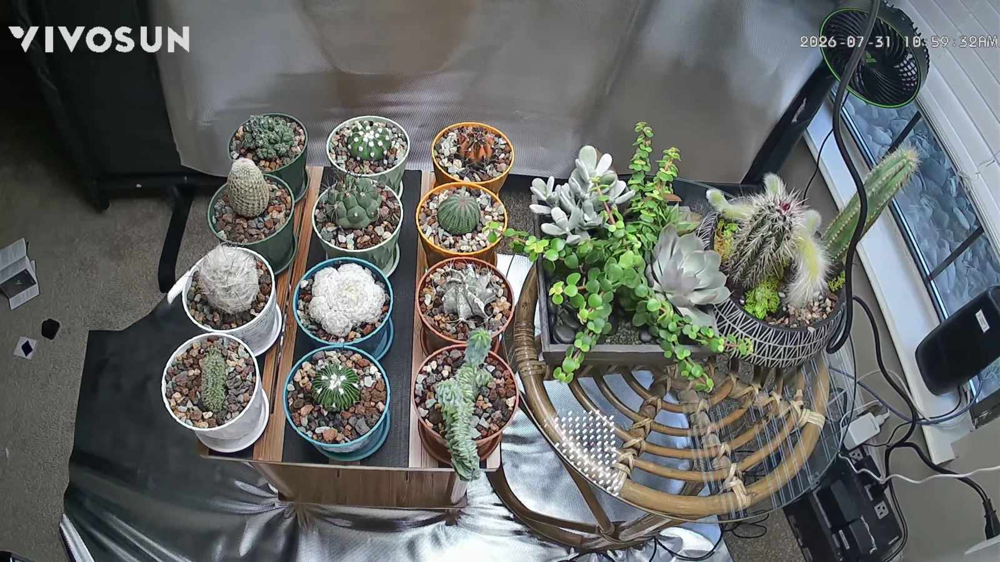
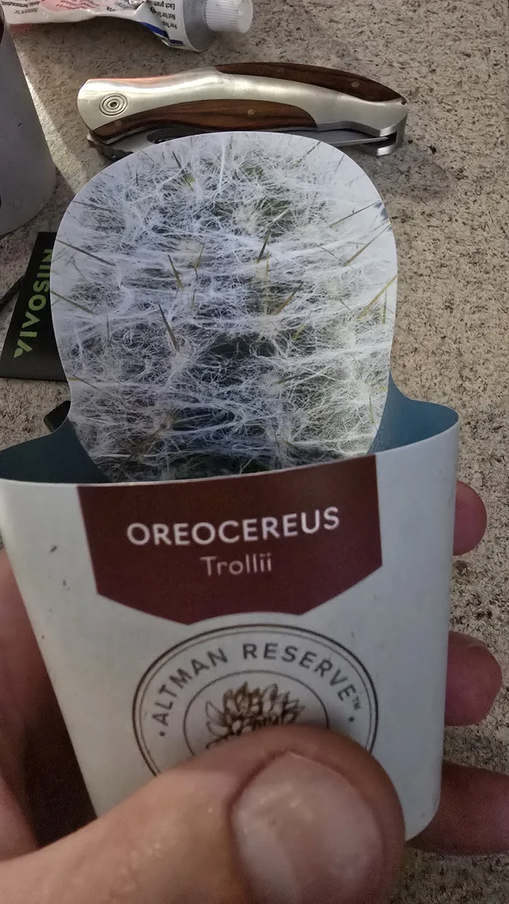
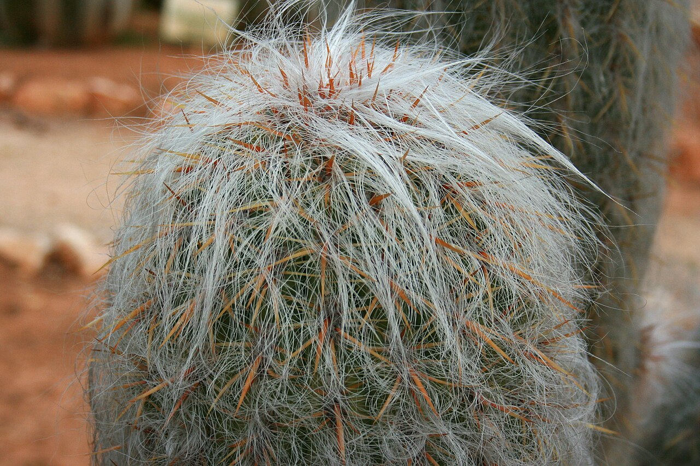
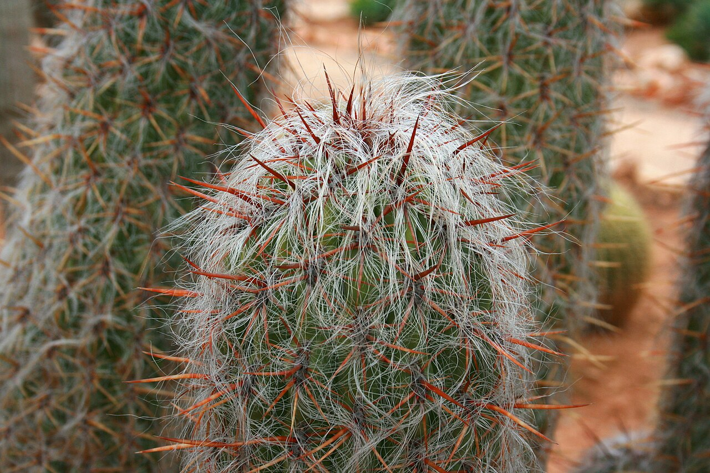
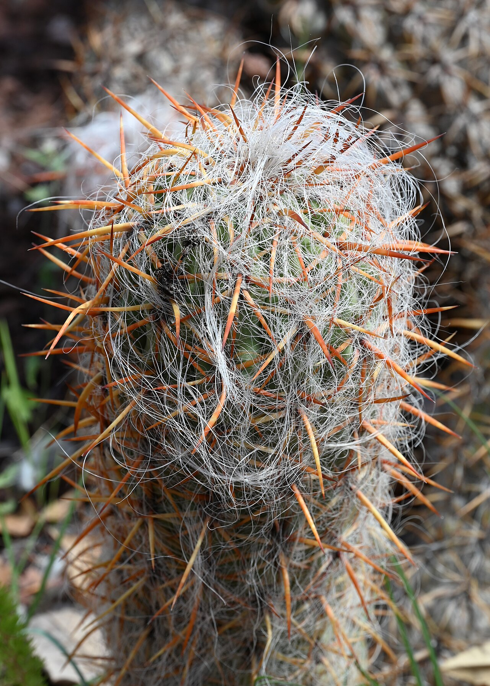
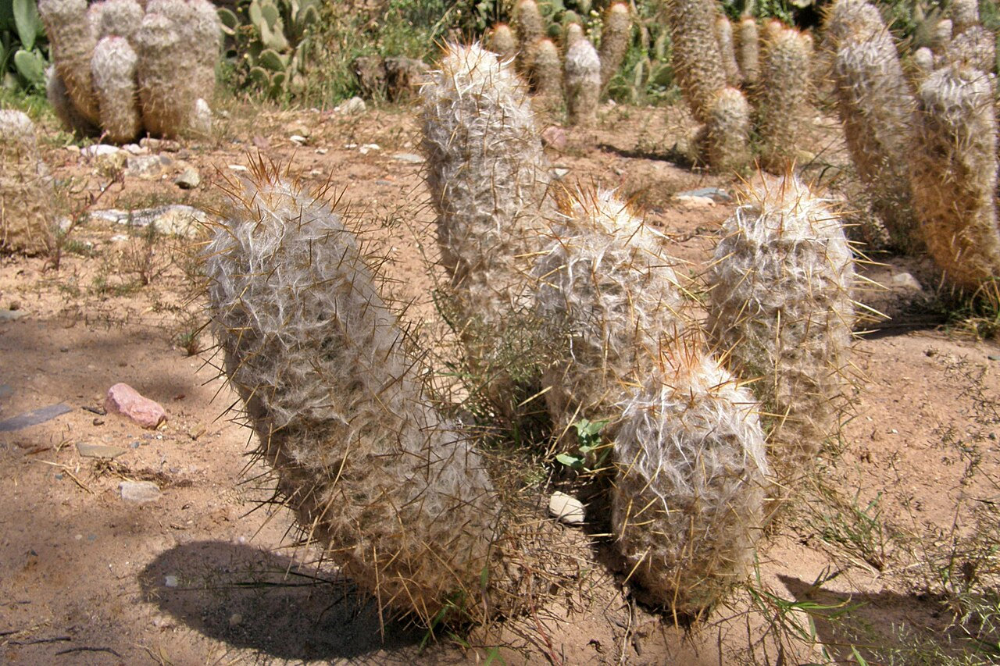
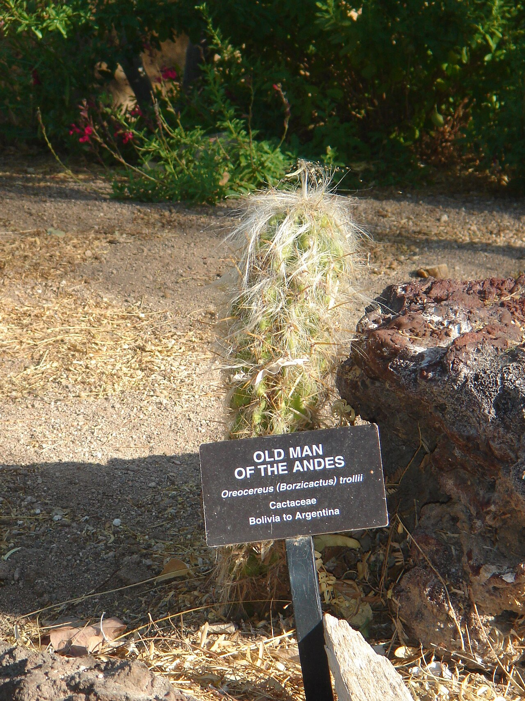
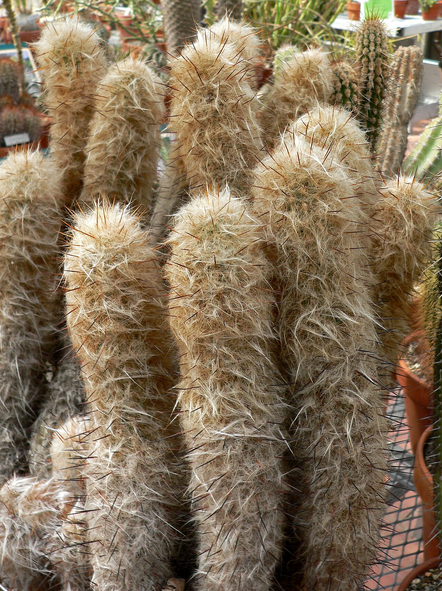
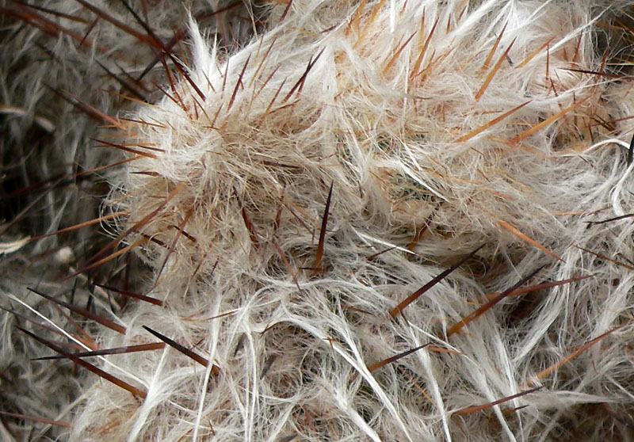

B2
Oreocereus trollii
Old Man of the Andes
- Collection record
- Starter-01
- Permanent label
B2- Identification
- labeled
- Status
- Current collection record
- Acquired from
- Altman Reserve
- Acquired on
Photo scope: Species-reference photographs.
Spot it
What it looks like
Short upright column wrapped in white wool with reddish-brown spines showing through.
One curious thing
Did you know?
The dense wool helps protect an Andean cactus from intense high-altitude sun and cold nights.
Collection evidence
Your plant
These user-owned photographs document this collection record. They are separate from the reusable-license species references below.
{kind=link}

{kind=link}
{kind=link}

{kind=link}
Names and identity
| Kind | Name |
|---|---|
| Accepted botanical name | Oreocereus trollii (Kupper) Backeb. |
| Common names | Old Man of the Andes, Old Man of the Mountain |
| Original published name | Cereus trollii Kupper |
| Name meaning | Oreocereus means roughly “mountain cereus”; trollii honors German botanist Wilhelm Troll |
This is a genuinely woolly high-elevation cactus, not a sick or moldy one. The white hairs are modified spines surrounding a green column armed with much sharper reddish-brown central spines.
Origin, habitat, and history
The accepted wild range runs from Bolivia into northwestern Argentina, including Jujuy. It grows in dry, rocky Andean grassland and puna at roughly 3,000–4,000 m elevation. Strong ultraviolet light, cold nights, wind, and limited moisture are normal there. The hair layer shades the stem and traps a thin boundary of air, useful in a habitat that can be sunny and cold on the same day.
Walter Kupper published the plant as Cereus trollii in 1929. Curt Backeberg moved it to Oreocereus in 1936. Kew currently accepts that combination and assesses the species as Least Concern, although that does not make every local population disturbance-proof.
Mature plants form upright columns and may cluster from the base. Tubular reddish to pink flowers emerge around the upper stem rather than from a bare terminal crown. Flowering is a mature-plant event, so a small nursery specimen may spend years simply building its column and wool.
Care in this collection
| Topic | Practical approach |
|---|---|
| Grow-light position | High-light zone after acclimation. A working target is about 12–20 mol/m²/day DLI, equivalent to an average 280–460 µmol/m²/s over 12 hours. |
| Outdoor light | Bright light and increasing direct sun; acclimate because hairs do not prevent sunburn after a dim period. |
| Water | Soak the root ball, drain completely, then wait until it is dry and the pot is light. Water more readily during warm active growth and much less in a cool, slow winter period. |
| Mix and pot | The current drained 4-inch pot and gritty mix are reasonable. Do not bury the woolly base or let the tray hold water. |
| Temperature | It experiences cold in habitat, but a small watered pot is less forgiving. Keep it dry during cool spells and protect it from hard freezes. |
| Feeding | A dilute, low-nitrogen cactus fertilizer a few times during active growth is plenty; the included fertilizer in fresh mix reduces urgency. |
The AW200SE can provide far more light than this small plant needs at close range. Compact new growth with strong spines is the goal. Fresh bleached or tan areas mean the increase was too fast; a narrowing tip with weak spines suggests too little light.
Propagation and watch points
- Seed is the normal way to produce new genetic individuals; established offsets can be separated after the cut calluses.
- Mealybugs can hide deep under the hair. Look for sticky residue, cottony patches that differ from the even natural wool, or a stalled growing point.
- Do not routinely mist or wash the wool indoors. Persistent damp around the crown and base removes much of the margin for error.
- The sharp central spines extend beyond the soft-looking hairs. Handle the pot, not the plant.
Sources
Growth, reproduction, and habitat
Life in 10 credited views
No credible reusable-license seedling / juvenile, flower, fruit / seed images are archived yet. Stage labels describe the photograph, not the age of the collection plant.
- Seedling / juvenile
- Mature form
- Flower
- Fruit / seed
- Wild habitat
- Close detail







{kind=link}
{kind=link}
{kind=link}
{kind=link}
{kind=link}
{kind=link}
{kind=link}
{kind=link}
{kind=link}
{kind=link}
{kind=link}
{kind=link}
{kind=link}
{kind=link}
{kind=link}
{kind=link}
{kind=link}
{kind=link}
{kind=link}
{kind=link}
{kind=link}
{kind=link}
{kind=link}
{kind=link}
{kind=link}
{kind=link}
{kind=link}
{kind=link}
{kind=link}
{kind=link}
{kind=link}
{kind=link}
{kind=link}
{kind=link}
{kind=link}
{kind=link}
{kind=link}
{kind=link}
{kind=link}
{kind=link}